Chapter 19. Dashboards
Dashboards are the primary element for real-time data visualization in the Early Warning, Alert and Response System (EWARS). By leveraging dashboards, you can visually monitor, analyse and present crucial data, metrics and key performance indicators. Dashboards are customizable and designed to meet specific needs of different levels of users. Multiple dashboards can be designed in an EWARS account to fulfil diverse monitoring needs, such as the EWARS overview dashboard, measles dashboard and cholera dashboard. Each EWARS account should have an overview dashboard to illustrate EWARS implementation in general.
19.1 Overview dashboard
The overview dashboard illustrates EWARS implementation in your context. Regardless of other dashboards in the account, each implementation should have an overview dashboard.
It is recommended that you use the standardized overview dashboard to allow standardization and consistency of branding across EWARS implementations. The Model account provides a standard dashboard, which you can customize to suit your context.
All EWARS accounts have an overview dashboard. Fig. 19.1 shows an example.
Fig. 19.1. Example of an overview dashboard
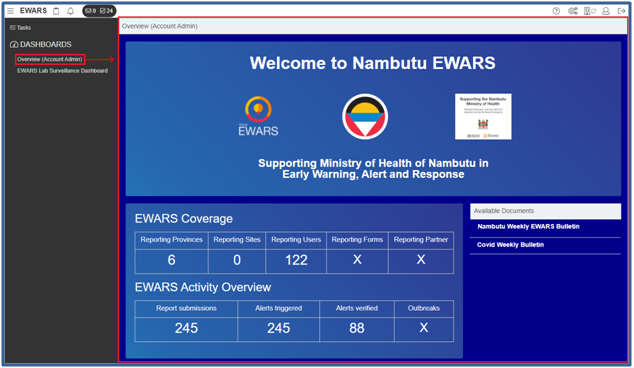
This overview dashboard highlights the early warning, alert and system in place and acts as the EWARS landing page when you log in. All overview dashboards should follow the same standard format as suggested in the Model account. A typical overview dashboard consists of a top section showing the key stakeholders involved (e.g. the ministry of health and WHO). The middle section shows the EWARS coverage in your context and an overview of the activities of EWARS operations. The last section comprises the associated activity and tasks of your account.
19.2 Copying the overview dashboard
Instead of developing your own dashboard from scratch, you can copy a sample dashboard given from the Model account and modify it to suit your context.
Step 1. Copy an overview dashboard to your account.
Select Menu > Configuration Transfer. Select Model account from the Source Account drop-down menu. The system displays the List of transferable items.
Enter “Overview (Account Admin)” in the search box > select the dashboard Overview (Account Admin) > click on the transfer
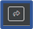
icon. Click on Confirm, and the dashboard is copied to your account.
Step 2. Assign a dashboard.
When you copy a dashboard, it is available only to your account in the list of dashboards. However, you can assign a dashboard, making it visible on the EWARS home screen and available to other web users and Reporting Users. In this way, you can have different dashboards that are available to different users, based on their roles.
- Click on the settings icon > click on
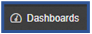
.
- Select a role from the drop-down menu (e.g. Reporting User) > click on the add icon, and a list of dashboards is visible. Scroll down to Overview (Account Admin) > click on the add
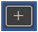
icon to add the dashboard to the list, as shown below:
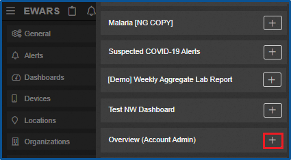
- Click on Save Change(s).
Step 3. View the dashboard.
- Click on EWARS
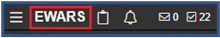
as highlighted, and the assigned dashboard can be seen at the left-hand side.
 Note: copying the sample dashboard merely brings the skeletal structure to your account. It is important to keep in mind that the copied sample dashboard has no content. After you copy it to your account, it won’t be functional unless you apply modifications and link your data with the dashboard. Note: copying the sample dashboard merely brings the skeletal structure to your account. It is important to keep in mind that the copied sample dashboard has no content. After you copy it to your account, it won’t be functional unless you apply modifications and link your data with the dashboard. |
 The EW The EW |
ARS overview dashboard is the standard dashboard. EWARS recommends a similar pattern and format of dashboards for all accounts. This allows standardization across EWARS accounts . |
19.3 Editing a sample dashboard
Editing a sample dashboard involves changing the country name and logo according to your requirements. You can also add/remove widgets in the overview dashboard.
- Select Menu > Dashboards. Click on the edit icon of the Overview (Account Admin) dashboard, and the dashboard editor below appears:
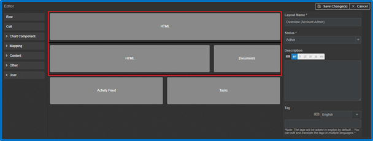
| Note: the activity feed and tasks widgets will fetch the activities and tasks of your account automatically, so you may keep these widgets as they are. These don’t require any modifications. |
For more information, refer to Chapter 17. Widgets and their configuration.
Step 1. Change the country name and logo.
- Click on the first row with the label HTML (HyperText Markup Language), and the widget configuration screen opens. Replace “Nambutu” with “Country X”, as shown below:
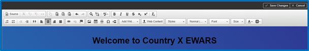
Click on , and the Web Content screen opens in a new tab.
Click on
 > select Folder Path (e.g. images) > click on
> select Folder Path (e.g. images) > click on  , and a file chooser dialogue box opens. Select a logo file, and the logo is uploaded.
, and a file chooser dialogue box opens. Select a logo file, and the logo is uploaded.Look for the newly uploaded file and click on the copy
 icon of the uploaded image > close the Web Content browser tab, and you will be back on the Website Builder configuration screen.
icon of the uploaded image > close the Web Content browser tab, and you will be back on the Website Builder configuration screen.
The logo image file is uploaded. Next, you need to provide the copied universal resource locator (URL) of the uploaded image.
- Double-click on the image you want to change, and the Image Properties screen below opens:

Replace the URL under the Image Info tab with the copied URL of the uploaded image > enter the new Width in pixels (e.g. “100”) > enter the new Height in pixels (e.g. “100”).
Click on OK > click on Save Change(s), and the HTML widget closes.
Step 2. Reconfigure the EWARS coverage and activity overview.
This widget is configured using locations, indicators and forms, and these are different for each EWARS account. Therefore, they need to be reconfigured in the dashboard.
- Click on the second row with the label HTML, and the HTML editor screen appears. Look for Raw Value icon highlighted below:
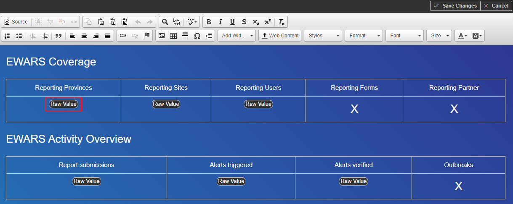
- Double-click on Raw Value, and the widget configuration screen below appears:

Configure the widget according to your requirements. For more information about configuring the widget, refer to Chapter 17. Widgets and their configuration, topic 17.6.1 Raw widget in dashboards.
Click on Save Change(s).
Step 3. Remove the documents widget.
- Right-click on the cell with the label Documents, and cell options are visible. Click on Remove Cell, as shown below, and the cell is removed:
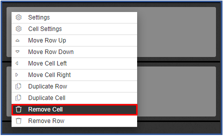
- Click on Save Change(s), and the documents widget is removed.
Step 4. Add an outbreaks widget.
Drag and drop a row widget from the left-hand column to the middle section, and a row is added.
Click on the expand
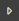
icon in front of the User widget in the left-hand hand column to expand the widget categories. Drag the Outbreaks widget from the category list, and drop it onto the added row in the middle section, as shown below:
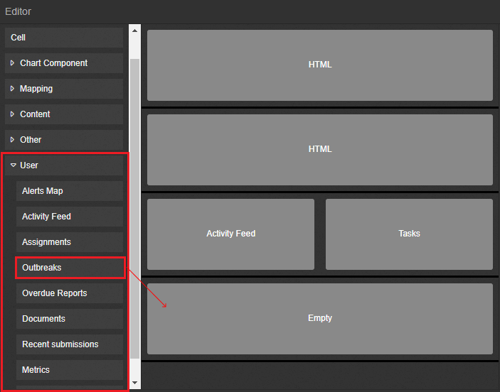
Right-click on the Outbreaks row, and cell settings options appear. Click on
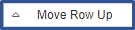
, and the row is moved up.Click on the Outbreaks row and configure the widget according to your needs. For more information about configuring this widget, refer to Chapter 17. Widgets and their configuration, topic 17.9 Outbreaks widget.
Click on Save Change(s), and the widget configuration screen closes.
Step 5. Save and view the dashboard.
Click on Save Change(s) to save all the changes made to the dashboard.
Click on EWARS as highlighted, and the dashboard opens with the newly added changes, as shown below:
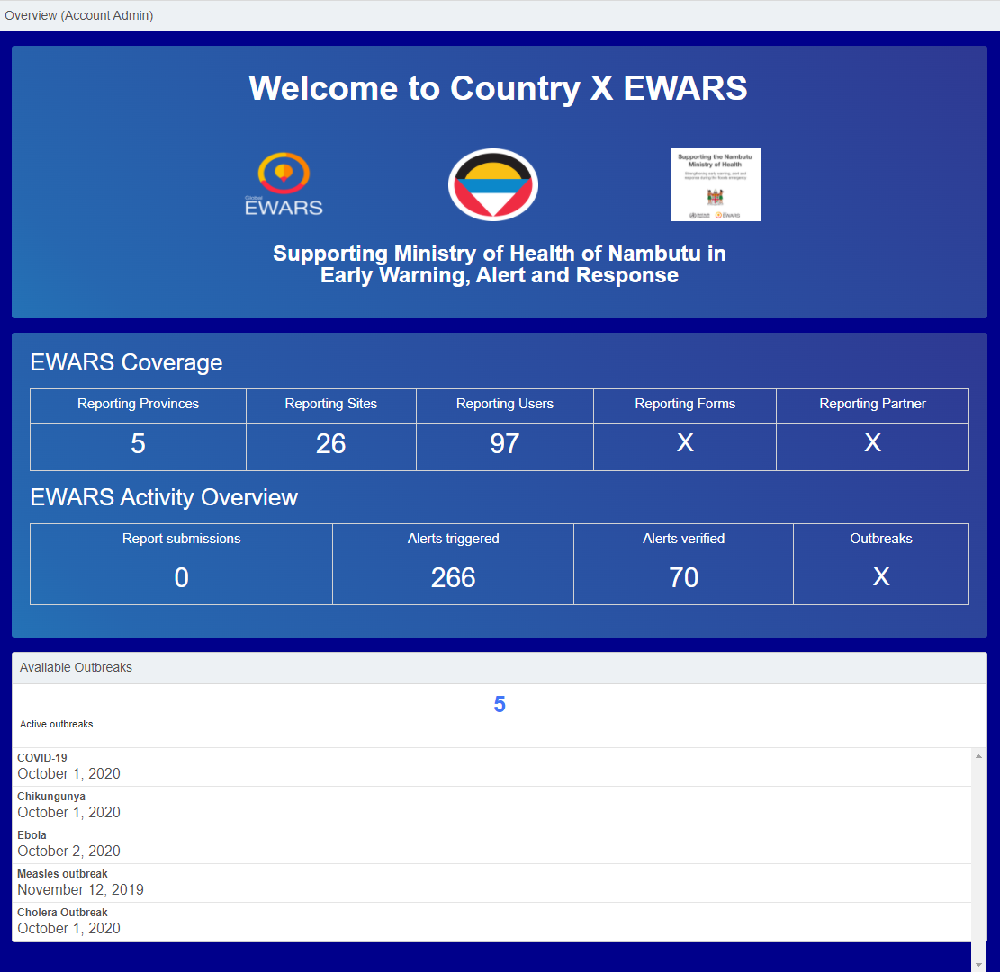
19.4 Creating a new dashboard
Creating a new dashboard entails designing the dashboard, configuring the widgets in it and assigning the dashboard to your role.
To design the dashboard, you can drag and drop the relevant widgets according to your requirements, to achieve the desired structure. You can configure the dashboard using the various widgets such as text, image, HTML, chart, map and table widgets provided in the dashboard editor. To view the dashboard and the modifications, assign it to your role. For more information on how to assign dashboards, refer to topic 19.8 Assigning a dashboard.
For technical support, please contact the EWARS Super Administrator.
Follow the steps below to create a new dashboard.
- Select Menu > Administration > Dashboard > Create New, and the dashboard editor screen below opens:
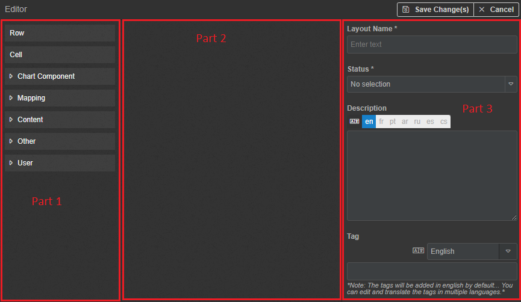
To create a new dashboard, follow the steps below.
Configure the general settings shown in Part 3 in the screenshot. Fill in the Layout Name > set Status as Active or Inactive. Only dashboards whose status is Active are visible while assigning the dashboard to your role. Enter a Description > enter Tags.
Drag and drop a Row widget from Part 1 to Part 2 of the screenshot.
Drag and drop a Cell widget onto the added row.
Drag and drop a desired widget (e.g. Image or Video) onto the cell.
Add all the widgets that you would like to have on your dashboard in the same way.
To move the row/cell up, down, right or left, or to remove it, right-click on it and select the appropriate option.
The screenshot below shows an example in which widgets are added to the dashboard.
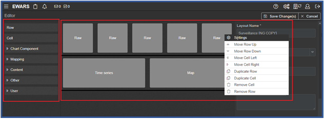
Configure all the widgets placed in the cells one by one. To learn more about configuring dashboard widgets, refer to Chapter 17. Widgets and their configuration.
Click on Save Change(s), and the dashboard is saved.
19.5 Editing a dashboard
- Select Menu > Dashboards. Click on the edit icon to edit the existing dashboard > make the relevant changes. Click on Save Change(s), and the dashboard is edited.
19.6 Duplicating a dashboard
Duplicating dashboards helps to save time and can be very helpful in scenarios where you want to replicate a layout but with different widgets.
- Select Menu > Dashboards. Click on the duplicate icon to edit the existing dashboard > enter a new name for the dashboard > make the required changes to the dashboard. Click on Save Change(s), and the dashboard is duplicated.
19.7 Deleting a dashboard
Deleting a dashboard is helpful in scenarios where there is no longer a need to monitor a trend in disease outbreak or an event.
- Select Menu > Dashboards. Click on the delete
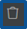
icon to delete the existing dashboard. Click on Confirm, and the dashboard is deleted permanently.
| Note: once deleted, a dashboard cannot be recovered. |
19.8 Assigning a dashboard
You can assign different dashboards to users according to their roles. For example, the overview dashboard is different for an Account Administrator and a Reporting User.
- Click on the settings icon > click on
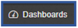
, and a screen with the option to select a role and the list of dashboards is visible, as shown below:
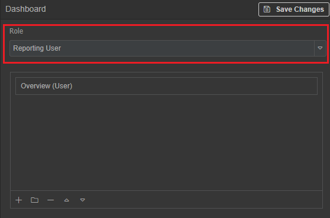
- Select a role from the drop-down menu (e.g. Reporting User) > click on the add icon, and the list of dashboards below appears:
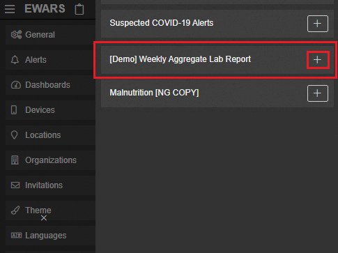
| Note: only dashboards with status set as active are visible in the list of dashboards. |
Click on the add
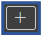
icon, and the dashboard is added to the list. Click on Save Change(s).Click on EWARS, and the assigned dashboard is visible, as shown below:
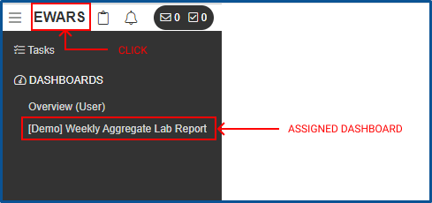
19.9 Assigning a dashboard to a specific user group
You can create a dashboard group and assign it to a role for viewing, as set out below.
Click on the settings icon > click on , and the dashboard settings open.
Select a role from the drop-down menu (e.g. Reporting User).
Click on the folder
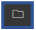
icon, and the section screen below appears:
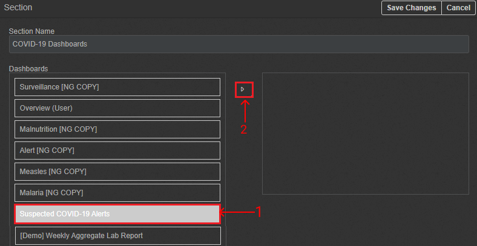
Enter the Section Name (e.g. COVID-19 Dashboards). Select a dashboard (e.g. Suspected COVID-19 Alerts) > click on the move
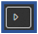
icon, and the selected dashboard is added to the right-hand side.Similarly, select one more dashboard (e.g. Weekly Aggregate Lab Report), click on the move icon, and the dashboard is added to the right-hand side.
Click on Save Change(s), and the section screen is closed.
Click on Save Change(s) to save the changes to the dashboard settings.
Click on EWARS, and the assigned dashboard group is visible, as shown below:
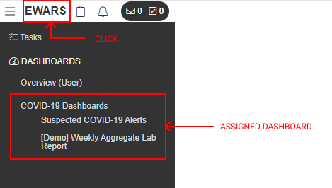
The following chapter explores how to use the outbreaks widget in EWARS to bring attention to ongoing outbreaks and facilitate speedy reporting.